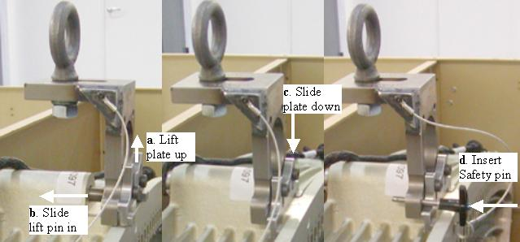

| NOTE: | Illustration 5 shows hook installation on detector in crate for clarity without extra components in the way. On the gantry, the balance weight failsafe rod goes through the large hole seen in the lift hook. The failsafe rod does not exist on older VCT systems. |
Illustration 5: VCT Detector Lift Hook
